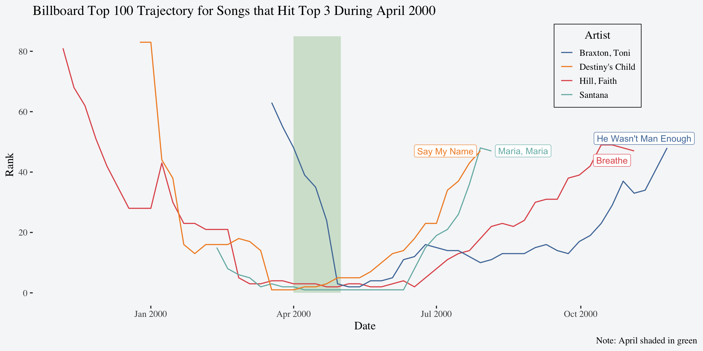

Code
knitr::opts_chunk$set(comment = ">")
library(tidyverse)
library(ggrepel)
library(ggthemes)Read in the data, clean up the names, and pivot it in a way so the first few rows look like this:
> # A tibble: 5,307 × 7
> year artist track time date_entered week rank
> <dbl> <chr> <chr> <time> <date> <int> <dbl>
> 1 2000 2 Pac Baby Don't Cry (Keep... 04:22 2000-02-26 1 87
> 2 2000 2 Pac Baby Don't Cry (Keep... 04:22 2000-02-26 2 82
> 3 2000 2 Pac Baby Don't Cry (Keep... 04:22 2000-02-26 3 72
> 4 2000 2 Pac Baby Don't Cry (Keep... 04:22 2000-02-26 4 77
> 5 2000 2 Pac Baby Don't Cry (Keep... 04:22 2000-02-26 5 87
> 6 2000 2 Pac Baby Don't Cry (Keep... 04:22 2000-02-26 6 94
> 7 2000 2 Pac Baby Don't Cry (Keep... 04:22 2000-02-26 7 99
> 8 2000 2Ge+her The Hardest Part Of ... 03:15 2000-09-02 1 91
> 9 2000 2Ge+her The Hardest Part Of ... 03:15 2000-09-02 2 87
> 10 2000 2Ge+her The Hardest Part Of ... 03:15 2000-09-02 3 92
> # ℹ 5,297 more rowsCreate a variable named date that corresponds to the week based on the date_entered.
Create a dataset of the song(s) with the most weeks in the top 3 by month of 2000.
billboard_top3_month <- billboard_tidy_date |>
mutate(month = month(date),
year = year(date),
top3 = if_else(rank <= 3 & year == 2000, 1, 0)) |>
mutate(peak_weeks = sum(top3),
.by = c(month, artist, track)) |>
slice_max(peak_weeks,
by = month) |>
distinct(month, artist, track, peak_weeks) |>
arrange(month)
billboard_top3_monthmonth variable from out date variable.
top3 indicator we provide the two conditions that the rank for that observation is less than or equal to 3 AND the year is 2000. If so, top3 will be assigned a value of 1 and if not it will get a value of 0.
> # A tibble: 16 × 4
> month artist track peak_weeks
> <dbl> <chr> <chr> <dbl>
> 1 1 Aguilera, Christina What A Girl Wants 2
> 2 2 Aguilera, Christina What A Girl Wants 4
> 3 2 Savage Garden I Knew I Loved You 4
> 4 3 Lonestar Amazed 4
> 5 4 Destiny's Child Say My Name 5
> 6 4 Santana Maria, Maria 5
> 7 5 Hill, Faith Breathe 4
> 8 5 Santana Maria, Maria 4
> 9 6 Hill, Faith Breathe 3
> 10 6 Santana Maria, Maria 3
> 11 7 Aaliyah Try Again 5
> 12 8 matchbox twenty Bent 4
> 13 9 Janet Doesn't Really Matte... 5
> 14 10 Madonna Music 4
> 15 11 Creed With Arms Wide Open 4
> 16 12 Destiny's Child Independent Women Pa... 5Pick one month of 2000 and visualize the entire charting trajectory of the songs that spent at least 1 week in the top 3 during that month.
billboard_top3_month_viz <- billboard_tidy_date |>
mutate(month = month(date),
year = year(date),
top3 = if_else(rank <= 3 & year == 2000, 1, 0)) |>
mutate(month_peak = ifelse(top3 == 1, month, NA),
.by = c(month, artist, track)) |>
filter(any(month_peak == 4),
.by = c(track, artist))
ggplot(billboard_top3_month_viz, aes(date, rank, group = track, color = artist)) +
annotate(geom = "rect", xmin = ymd("2000-04-01"), xmax = ymd("2000-05-01"), ymin = 0, ymax = 85,
fill = "#59a14f", alpha = 0.25) +
geom_line(show.legend = TRUE) +
geom_label_repel(data = billboard_top3_month_viz |> slice_max(date, by = track),
aes(label = track),
show.legend = FALSE) +
scale_color_manual("Artist", values = c("#4e79a7","#f28e2c","#e15759","#76b7b2")) +
labs(title = "Billboard Top 100 Trajectory for Songs that Hit Top 3 During April 2000",
x = "Date",
y = "Rank",
caption = "Note: April shaded in green") +
theme_tufte(base_size = 14) +
theme(legend.position = c(0.85, 0.85),
legend.title.align = 0.5,
legend.box.background = element_rect(colour = "black", fill = "#f6f7f9"),
plot.background = element_rect(fill = "#f6f7f9", color = "#f6f7f9"))